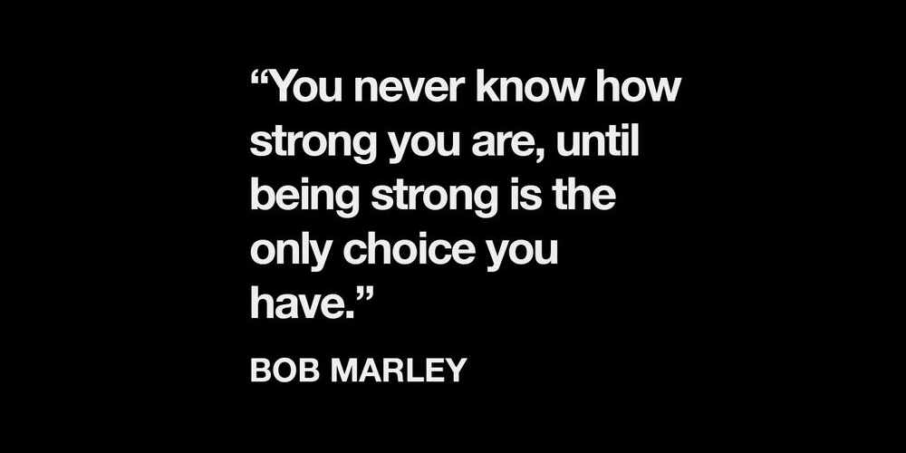

Çağlayan Demirci
Çağlayan Demirci


Depresyon 3 - Savaşçı Kişilik
Depresyon yazı dizisinin üçüncü ve son kısmı: Mücadele, onun araç mı karakter mi olduğu, depresyonun zayıflık olmadığı gibi kavramlar üzerine.
06.08.2018 ● düşünce, tecrübe

Depresyon 2 - Zevk ve Güç
Depresyon yazı dizisinin ikinci kısmı: Güç kavramı, bende çağrıştırdıkları, zevk karşısındaki pozisyonu ve depresyon ile bağlantıları.
31.07.2018 ● düşünce, tecrübe

Depresyon 1 - Anlamsızlık ve Mutluluk Algısı
Depresyon yazı dizisinin ilk kısmı: Depresyonu tanıma, acıyı kabullenme, mutluluk zorunluluğu algısı gibi kavramlar üzerine.
29.07.2018 ● düşünce, tecrübe

Bilgisayar Bilimleri
 Bu alanda çoğunluğu kaynak kodlarıyla beraber sunulan; kimi tecrübeler, notlar ya da öğreti amaçlı ufak yazılar.
Bu alanda çoğunluğu kaynak kodlarıyla beraber sunulan; kimi tecrübeler, notlar ya da öğreti amaçlı ufak yazılar.


Javascript ile Space Impact
24.04.2018
Basit, son derece kötü yazılmış, ancak iyi bir temel js kod alıştırması.